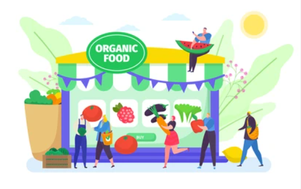
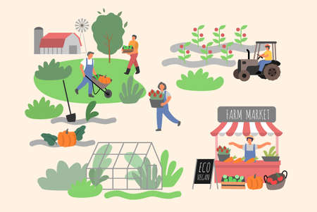

Welcome to AgroTech, your premier online platform dedicated to revolutionizing the agricultural industry.
At AgroTech, we are committed to fostering a sustainable and thriving agricultural community by providing
a dynamic marketplace for buying and selling vegetarian agricultural products, while also promoting environmental
stewardship. Our platform serves as a hub where farmers, producers, and enthusiasts can connect to buy and sell a
wide range of vegetarian agricultural goods, including organic fruits, vegetables, grains, and plant-based products.
Whether you're in need of fresh produce, specialty crops, or plant-based foods, AgroTech offers a seamless and
efficient marketplace tailored to meet your needs.
In addition to facilitating trade, we are passionate about promoting
sustainability and environmental stewardship. Recognizing the immense potential of agricultural waste, we strive
to harness its value by providing knowledge and information on how such waste can be recycled. By transforming
waste into valuable resources, we aim to minimize environmental impact while creating economic opportunities for
our community members. At AgroTech, we believe in the power of collaboration and innovation to drive positive
change in the agricultural sector. Join us in our mission to build a more sustainable future for agriculture,
where every resource is utilized to its fullest potential. Explore AgroTech today and become a part of the growing
movement towards a greener, more efficient agricultural industry.
Nourishing your needs.
Our Vision
Lead towards a greener, sustainable agricultural future through innovation.

Our Mission
Revolutionize agriculture with sustainable trade and waste repurposing.

Our Focus
Sustainable trade, Waste repurposing, Community engagement, Technological innovation.